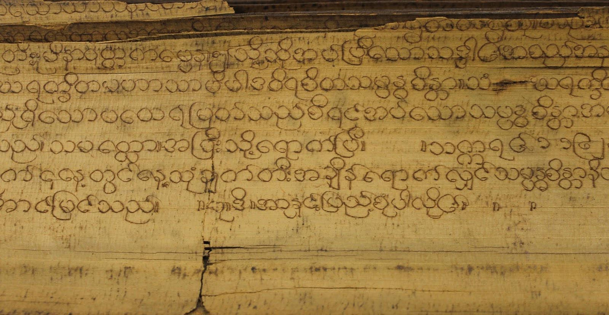
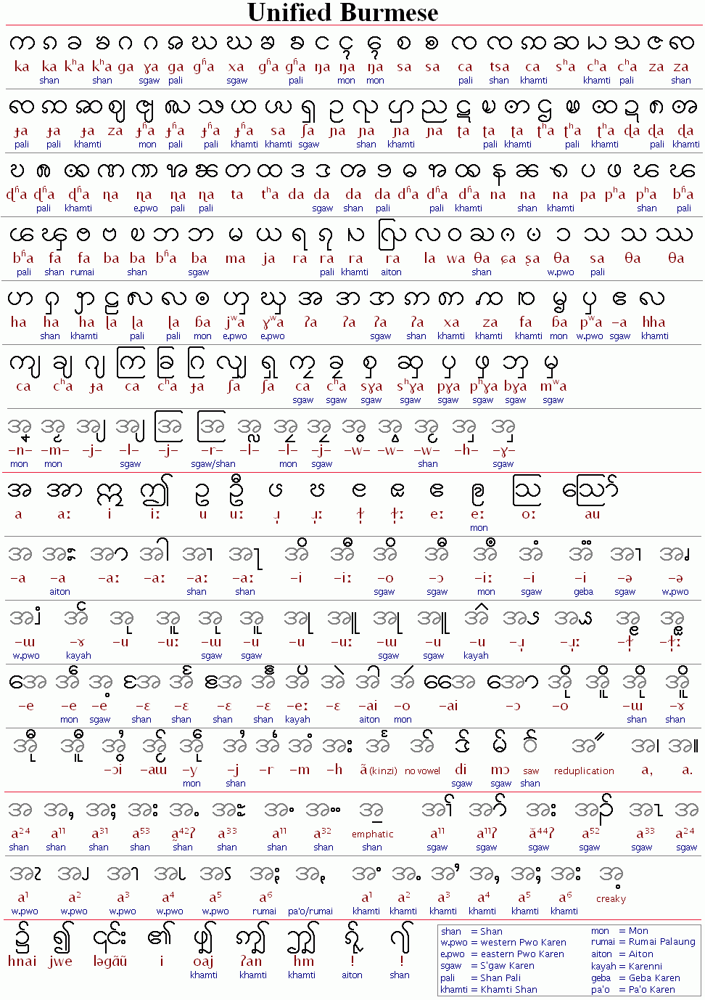

此為 【緬甸🇲🇲】現代緬文字 系列的第一篇，立志為全網最詳盡的中文緬文教學！
基本介紹：
緬文為母音副標文字(Abugida)，是婆羅米系文字的一員，主要以書寫緬甸語(မြန်မာဘာသာ)、孟語(ဘာသာမန်)、斯高克倫語(ကညီကျိာ်)、撣語(ၵႂၢမ်းတႆး)等等。然其等為皆為全然不同之語言，不論語言層面，於字母拼寫法皆略有不同。
範例：
繁體中文文本：
世界人權宣言 第一則：
人人生而自由，在尊嚴和權利上一律平等。他們賦有理性和良心，並應以兄弟關係的精神相對待。
緬甸語文本：
အပြည်ပြည်ဆိုင်ရာ လူ့အခွင့်အရေး ကြေညာစာတမ်း၊ အပိုဒ် ၁။
လူတိုင်းသည် တူညီ လွတ်လပ်သော ဂုဏ်သိက္ခာဖြင့် လည်းကောင်း၊ တူညီလွတ်လပ်သော အခွင့်အရေးများဖြင့် လည်းကောင်း၊ မွေးဖွားလာသူများ ဖြစ်သည်။ ထိုသူတို့၌ ပိုင်းခြား ဝေဖန်တတ်သော ဉာဏ်နှင့် ကျင့်ဝတ် သိတတ်သော စိတ်တို့ရှိကြ၍ ထိုသူတို့သည် အချင်းချင်း မေတ္တာထား၍ ဆက်ဆံကျင့်သုံးသင့်၏။
孟語文本：
လိက်လလောင်တြး အခေါင်အရာမၞိဟ် အလုံလိုက်၊ ပိုဒ် ၁။
ကောန်မၞိဟ်သီုဖအိုတ်ဂှ် သၠးကၠုင်ဂဗ္ဘ နဒဒှ် မၞိဟ်မဗၠးၜး ကေုာံ မနွံကဵု သိက္ခာ ကေုာံ အခေါင်အရာ မတုပ်သၟဟ်။ ကောန်မၞိဟ်တအ်ဝွံ ဒှ်သတ်မနွံကဵုပါရမဳ မစင်ခြင် ဟိုတ်ဖိုလ်၊ ဓဝ်သမ္တီတုဲ ညးမွဲကုမွဲ ထေက်ကဵုသ္ဒးဆက်ဆောံ ရေင်သကအ် နကဵုမေတ္တာစိုတ် ညံင်ကောဒေအ်အရင်။
斯高克倫語文本：
ဟီၣ်ခိၣ်ဒီဘ့ၣ်အတၢ်ဘၣ်သ့ၣ်ညါ ဘၣ်ဃးဒီး “ပၠၤအခွဲးအယာ်”၊ နီၢ်ဂံၢ်။
ဟီၣ်ခိၣချၢ ပှၤကိးဂၤဒဲး အိၣ်ဖျဲၣ်ထီၣ်သဘျ့ဒီး ဒ်သိးသိးလၢ အသူးအသ့ၣ်ဒီး အခွဲးအယၥၲတဖၣ်လီၤႋ အဝဲသ့ၣ် ဘၣ်တၢၲဟ့ၣ်သါ အီၤ လတၢၲကၣ်သ့သးဆးဒီး သးလၢအနီၤဖး တၢၲဂ့ၤဒီးတၢၲအၢအ ဆၢန့ၣ်လီၤႉ အဃိႇ တဂၤဒီးတဂၤကြၢးရ့လိၥၲမၣ် လိၥၲအသး လၢ ဒီပုၢၲဝဲၢၲအသူၣ်အသးန့ၣ်လီၤႉ
撣語文本：
လံၵႈပိုၼ်ꧤၢဝ်ႇဢၶႂၢင်ႉဢယေးၵုၼ်းဢၼ်ၵပ်းၵႆႇလုၺ်ႈၵုႈမိုင်မိုင်း၊ တွၼ်ႈၼိုင်ႈ ၁။
ၵူၼ်းၵူႈၵေႃႉၼႆႉၵိူတ်ႇမႃးၼ်ႂးတၢင်းဢၼ်မိးၵုင်ႇသရေႇလွတ်ႈလႅဝ်းꧤဵင်ႇပဵင်းၵၼ်လႄႈသင်၊ ဢၶႂၢင်ႉဢယေးတၢင်းဢၼ်လွတ်ႇလႅဝ်းꧤဵင်ႇပဵင်းၵၼ်လႄႈသင်၊ ၵူၼ်းၵူႈၵေႃႉမီးတၢင်းၺၢၼ်ႇဢၼ် ၸၵ်ႉꧤႄတႅဝ်းတတ်းလႄႈ မီးၸႂ်ဢၼ်ၸၢင်ႈရုၼ်ၼၼ်ႉလႄႈၼင်ႇၵၼ်ၵလူဝ်ႇမီးတၢင်းရၵ်ႉ သေယဝ်ႉ သိူၵ်ႈ သမ်ႇၵၼ်ဢေႃႈ။
字母由孟文或驃文改造而成。書寫序由左至右。字母多呈圓形，十分具有辨識度，據說是因緬甸人過去在棕櫚葉上書寫，而直筆容易劃破葉片，因此演變出此種書寫系統。
緬甸棕櫚葉手稿(圖源)：
緬文一字為一音節，由附加符號來表達不同的韻母、介音、變音及聲調。而由於歷史遺留，現代緬文有出現多個一音多字或發音與書面不同之問題。
各種的字母及部件(圖源)：
章節列表：
由於現代緬甸語緬文較為複雜，因此強烈建議照順序學習！
緬文拉丁化 請見：【緬甸🇲🇲】現代緬文字-緬拼篇
- 介紹緬文拉丁化之拼寫及發音，並舉例及練習。
子音 請見：【緬甸🇲🇲】現代緬文字-子音篇
- 介紹基本的33字母及數個罕見字母，並舉例及練習。
子音變音符 請見：【緬甸🇲🇲】現代緬文字-子音變音符篇
- 介紹基本的4個子音變化符號，及詳列單音、雙音及三音之變化，並舉例及練習。
母音 請見：【緬甸🇲🇲】現代緬文字-母音篇
- 介紹基本的母音符號，以及12個單音，並舉例及練習。
聲調 請見：【緬甸🇲🇲】現代緬文字-聲調篇
- 介紹基本的聲調符號及字母組合，並舉例及練習。
鼻化母音 請見：【緬甸🇲🇲】現代緬文字-鼻化母音篇
- 介紹鼻化母音符號及字母組合，並舉例及練習。
韻尾 請見：【緬甸🇲🇲】現代緬文字-韻尾篇
- 介紹塞韻尾符號及獨立韻尾，並舉例及練習。
重疊子音 請見：【緬甸🇲🇲】現代緬文字-重疊子音篇
- 介紹重疊子音，拆分及條列之，並舉例及練習。
其他字母及符號 請見：【緬甸🇲🇲】現代緬文字-其他字母及符號篇
- 介紹獨立字母、標點符號及特殊字母，並更詳盡介紹所有符號，後舉例及練習。